graph LR
video[/"Video"/] --SLEAP-->poses[/"Pose tracks"/]
poses --movement--> feat[Kinematic<br>features]
video --"BORIS"--> labels[Behaviour<br>annotations]
feat --train--> model
labels --train--> model[Random<br>Forest]
8 Training a supervised behaviour classifier
In Chapter 7 we used BORIS to annotate mount events on the video mouse044_task1_annotator1.mp4. In this chapter we put those annotations to work: we train a supervised behaviour classifier that learns to detect mount frames automatically from features derived from the pose tracks.
We will use movement to compute the features and scikit-learn to train a simple random forest classifier. Both packages are included in the animals-in-motion-env environment (see Section A.3.3), so make sure you have this environment activated before proceeding.
We will also use:
- the manually annotated SLEAP file (
mouse044_task1_annotator1.slp) containing pose tracks, and - the BORIS ground-truth behaviour annotations (
mouse044_task1_mount_events_boris.tsv) (see Section A.4).
Note
The goal here is to illustrate the workflow and the core concepts, not to train a production-grade classifier. We deliberately work with a single annotated video and a small set of interpretable features to keep the focus on the process rather than the model performance. A robust model would require substantially more data, as we discuss at the end of this chapter. In most practical applications, we would also rely on predicted pose tracks rather than manually annotated ones, since manual annotation is expensive and rarely scalable.
8.1 Load pose tracks and behaviour annotations
We start by loading the two pieces of data needed to train our classifier: the pose tracks and the behaviour annotations.
Let’s load the pose tracks into a movement dataset using load_dataset, as we did in Section 4.3.1.
from pathlib import Path
from movement.io import load_dataset
# Adjust this path if your CalMS21 folder lives elsewhere
data_dir = Path.home() / ".movement" / "CalMS21"
ds = load_dataset(
data_dir / "mouse044_task1_annotator1.slp",
fps=30,
)
ds<xarray.Dataset> Size: 598kB
Dimensions: (time: 3394, space: 2, keypoint: 7, individual: 2)
Coordinates: (4)
Data variables:
position (time, space, keypoint, individual) float32 380kB 854.4 ... 5...
confidence (time, keypoint, individual) float32 190kB nan nan ... nan nan
Attributes: (5)Since these pose tracks were labelled by hand rather than predicted by a model, their confidence values are undefined (nan) for all frames. The upside is that the data quality is generally high, so we can skip most of the usual data cleaning steps. However, the tracks aren’t perfectly smooth: human annotators inevitably introduce small frame-to-frame jitter. To address this, we will apply a rolling median filter to the position data using rolling_filter.
from movement.filtering import rolling_filter
ds.update(
{"position": rolling_filter(ds.position, window=7, min_periods=2)}
)
NoteUpdating in-place
Here we updated the existing position data variable in-place, effectively overwriting the original position information with the smoothed data. Depending on your specific workflow, you may prefer to create a new variable instead, or store the smoothed positions as a standalone data array.
# Store the smoothed positions as a new variable in the same dataset
ds["position_smoothed"] = rolling_filter(ds.position, window=7, min_periods=2)
# or, store the smoothed positions in a separate variable
position_smoothed = rolling_filter(ds.position, window=7, min_periods=2)Next, we load the manual BORIS annotations from the TSV file into a pandas DataFrame. The file uses the same BORIS export format described in Chapter 7, with one row per mount bout. We then select and display only the columns we are interested in, which include the start and stop times and frame indices of each mount bout.
import pandas as pd
boris_df = pd.read_csv(data_dir / "mouse044_task1_mount_events_boris.tsv", sep="\t")
columns_of_interest = [
"Subject",
"Behavior",
"Start (s)",
"Stop (s)",
"Duration (s)",
"Image index start",
"Image index stop",
]
boris_df[columns_of_interest]| Subject | Behavior | Start (s) | Stop (s) | Duration (s) | Image index start | Image index stop | |
|---|---|---|---|---|---|---|---|
| 0 | resident_b | mount | 0.033 | 1.767 | 1.733 | 1 | 53 |
| 1 | resident_b | mount | 17.667 | 22.467 | 4.800 | 530 | 674 |
| 2 | resident_b | mount | 29.733 | 32.500 | 2.767 | 892 | 975 |
| 3 | resident_b | mount | 33.700 | 36.000 | 2.300 | 1011 | 1080 |
| 4 | resident_b | mount | 48.467 | 50.267 | 1.800 | 1454 | 1508 |
| 5 | resident_b | mount | 52.800 | 54.233 | 1.433 | 1584 | 1627 |
| 6 | resident_b | mount | 59.900 | 62.633 | 2.733 | 1797 | 1879 |
| 7 | resident_b | mount | 88.767 | 91.833 | 3.067 | 2663 | 2755 |
| 8 | resident_b | mount | 92.267 | 93.000 | 0.733 | 2768 | 2790 |
| 9 | resident_b | mount | 102.600 | 104.500 | 1.900 | 3078 | 3135 |
8.2 Add per-frame behaviour labels
Using these ground-truth behaviour labels, we construct a per-frame boolean array, indicating whether a mount is occurring (True) or not (False) at each frame.
We store this boolean array in the dataset as a new data variable is_mount, alongside position and confidence, so that the behaviour labels and pose tracks live together in a single object.
This is_mount array serves as our vector of class labels, i.e. the ground truth for the classifier.
# Start with an all-False boolean array the size of dataset's time axis
ds["is_mount"] = xr.zeros_like(ds.time, dtype=bool)
# Fill in True between start and stop frames for each BORIS bout
for _, ev in boris_df.iterrows():
start, stop = ev["Image index start"], ev["Image index stop"]
ds["is_mount"][start:stop] = True
ds.is_mount<xarray.DataArray 'is_mount' (time: 3394)> Size: 3kB False True True True True True True ... False False False False False False Coordinates: (1)
NoteBoolean vs categorical labels
Boolean labels are suited for our binary classification problem (mount vs non-mount). If we wanted to distinguish between several mutually exclusive behavioural states (multi-class), we’d replace the boolean array with one label per frame—integers or strings naming each state.
If instead behaviours can co-occur (e.g. sniffing while walking), we’d have a multi-label problem, which is usually encoded as one boolean column per behaviour. Most scikit-learn classifiers, including random forests, handle both cases.
Let’s calculate the fraction of frames that are labelled as mount.
mount_fraction = ds.is_mount.mean()
print(f"Mount frames: {mount_fraction.item():.2%}")Mount frames: 20.57%
NoteWhy did we use the mean?
Computing a fraction involves counting how many entries satisfy a condition and dividing by the total number of entries. For boolean arrays, True is treated as 1 and False as 0, so the mean of a boolean array directly gives the fraction of True entries. In contrast, the sum would give the total number of True entries.
Tipnote
We have much fewer mount frames than non-mount frames. This situation—often referred to as class imbalance—is quite common in behaviour classification scenarios.
8.3 Our first classifier: a distance threshold
What is the simplest classifier we could define, given the pose tracks for both mice?
One straightforward option could be to derive a single variable from the pose tracks that takes noticeably different values during mount vs non-mount periods.
For example, this could be the distance between the two mice’s centroids. During a mount, the resident is positioned directly on top of the intruder, so their centroids should be very close together.
We can compute this inter-mouse distance using the same approach introduced in Chapter 4.
TipExercise 8.1
Using the position data array of our dataset ds:
- Compute
centroid_pos, the trajectory of each mouse’s centroid usingxarray.DataArray.mean. Hint: the centroid is the mean of all keypoints for a given mouse at each time frame. - Compute
inter_mouse_distance, the distance between the two centroids usingcompute_pairwise_distances. Hint: specify"individual"as the dimension over which distances should be computed.
Let’s plot the distance between centroids across time, and highlight the mount frames (expand the code block to reveal the plotting function).
Code
import matplotlib.pyplot as plt
def plot_over_time(data_array, mount, ylabel, ymax=None):
"""Plot a per-frame quantity over time, with mount frames highlighted.
``mount`` is a boolean array (aligned to ``data_array``'s time axis) marking
the frames to shade.
"""
ymax = float(data_array.max()) if ymax is None else ymax
plt.figure(figsize=(7, 3))
plt.plot(data_array.time, data_array)
plt.fill_between(
data_array.time,
0,
ymax,
where=mount,
color="orange",
edgecolor=None,
alpha=0.3,
)
plt.xlabel("time (s)")
plt.ylabel(ylabel)
plt.tight_layout()
plt.show()
plot_over_time(inter_mouse_distance, ds.is_mount, ylabel="distance (px)")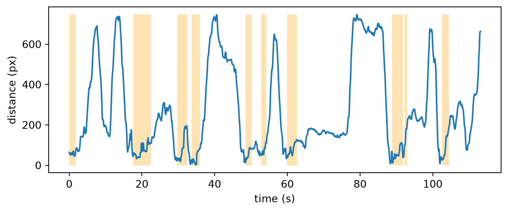
That looks very promising: the inter-mouse distance is clearly lower during mounts.
We can turn the inter-mouse distance into a boolean array by applying an arbitrary threshold of 100 pixels (chosen by eye-balling the above plot).
distance_threshold = 100 # pixels
ds["predicted_mount"] = inter_mouse_distance < distance_threshold
ds.predicted_mount<xarray.DataArray 'predicted_mount' (time: 3394)> Size: 3kB True True True True True True True ... False False False False False False False Coordinates: (1) Attributes: (1)
This single rule already counts as a “classifier”, even if it’s a rather crude one.
To evaluate how well it performs, we can compare its predictions against the ground-truth labels. A confusion matrix is a convenient way to do this: it summarises, in a table, how many frames fall into each combination of predicted vs. ground-truth class.
To visualise this, we use scikit-learn’s ConfusionMatrixDisplay, which plots the matrix from our predicted and ground-truth labels. By default, the cells contain the raw frame counts for each predicted/ground-truth combination. With normalize="true", each row is scaled by its total, so every cell shows the percentage of frames relative to the total number of frames for that ground-truth class.
from sklearn.metrics import ConfusionMatrixDisplay
disp = ConfusionMatrixDisplay.from_predictions(
ds.is_mount.values,
ds.predicted_mount.values,
labels=[True, False], # mount first
display_labels=["mount", "not mount"],
normalize="true", # normalise over each true-class row
values_format=".0%",
cmap="magma",
)
disp.ax_.set_xlabel("Predicted class")
disp.ax_.set_ylabel("Ground-truth class")
plt.show()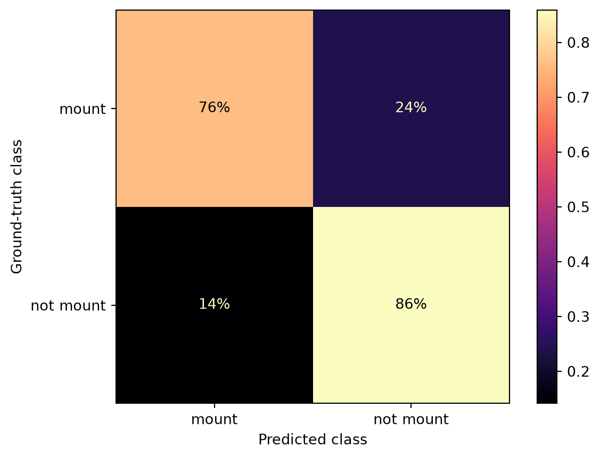
We can see that 76% of the frames that were manually labelled as mount were also classified as mount with our simple threshold-based classifier. The remaining 24% of the true mount frames were classified incorrectly as “non-mount”.
To further inspect these results we can compute a few more evaluation metrics using scikit-learn’s classification_report, which calculates precision, recall and F1-score for each class.
from sklearn.metrics import classification_report
print(classification_report(
ds.is_mount.values,
ds.predicted_mount.values,
labels=[True, False], # mount first
target_names=["mount", "not mount"],
)) precision recall f1-score support
mount 0.58 0.76 0.66 698
not mount 0.93 0.86 0.89 2696
accuracy 0.84 3394
macro avg 0.76 0.81 0.78 3394
weighted avg 0.86 0.84 0.85 3394
NoteUnderstanding the classification report
All metrics are built from just four counts, obtained by comparing predictions and ground truth. Taking mount as the “positive” class:
Predicted mount |
Predicted non-mount |
|
|---|---|---|
Actual mount |
TP (true positive) | FN (false negative) |
Actual non-mount |
FP (false positive) | TN (true negative) |
These are exactly the four cells of the confusion matrix above. From these counts we can compute the following metrics:
Precision: of all frames predicted as mount, what fraction of them really was mount? \[\text{Precision} = \frac{TP}{TP + FP}\]
Recall: of all frames manually labelled as mount frames, what fraction did we predict correctly? \[\text{Recall} = \frac{TP}{TP + FN}\]
F1 score: the harmonic mean of precision and recall; high only when both are high. \[F_1 = 2 \cdot \frac{\text{Precision} \cdot \text{Recall}}{\text{Precision} + \text{Recall}} = \frac{2\,TP}{2\,TP + FP + FN}\]
Accuracy: considering all frames, what fraction was classified correctly? Unlike the metrics above, it is a single number for the whole dataset rather than one per class, so it is easily inflated when one class dominates. \[\text{Accuracy} = \frac{TP + TN}{TP + TN + FP + FN}\]
Support: refers to the number of frames that truly belong to each class (mount: \(TP + FN\); non-mount: \(TN + FP\)). It tells us how much data each row’s metrics are based on.
Macro average: refers to the unweighted mean of the two class rows (e.g. (0.58 + 0.93)/2 for precision). Every class counts equally regardless of its size, so the rare mount class gets equal say. This is usually considered an honest summary in an imbalanced problem.
Weighted average: refers to the mean of the metric weighted by the size of the class. Big classes dominate, so it tracks accuracy closely (0.84 vs 0.84 here) and hides poor performance on the rare class.
Focusing on the mount class:
- Precision ≈ 0.58: more than 40% of frames flagged as
mountare false alarms. - Recall ≈ 0.76: the distance rule misses about 1/4 of all true
mountframes. - F1 ≈ 0.66: a convenient single-number summary that balances the two types of mistakes.
Overall, we get an accuracy of about 0.84, meaning our classifier predicts 84% of frames correctly. But note this can be misleading in an imbalanced dataset like ours. Since only ~21% of frames are classified as mount, a classifier that always predicts not mount would already be right ~79% of the time, even if it predicted incorrectly all mount frames. This is why for imbalanced datasets, precision, recall and F1 are more informative than accuracy alone.
TipDiscuss
In a real scenario, we would probably want to analyse more than 1.5 minutes of video, and consider applying the classifier to new videos. So let’s think about how well we expect our classifier to do in these new, unseen videos (this is often called “generalisation” in machine learning):
- Do you expect the above distance threshold to perform well on a new video? Why or why not?
- How would you go about picking the threshold more systematically, rather than by eye?
8.4 A hand-crafted decision tree
The classifier based on thresholding a single variable got us surprisingly far, but it also has clear limitations. There are many situations in which the two mice’s centroids are close together even though the resident is not mounting the intruder. All of these would be incorrectly labelled as “mounting” by our simple distance threshold. For example:
- the intruder could be mounting the resident.
- the two mice could be interacting in other ways (sniffing, fighting, playing).
We don’t see many such cases in this particular video, but they will likely appear in other recordings.
So, how can we improve our classifier?
One option is to incorporate additional variables, allowing the model to learn a more nuanced decision boundary. Each new variable effectively adds another “yes/no” question the model can ask about each frame—e.g. “are the mice close together?”, “is the intruder facing away from the resident?”, “is the resident moving fast?”, and so on. With multiple such cues, the classifier can combine simple rules to make more informed decisions, and avoid the pitfalls of relying on a single variable.
This is the intuition behind decision tree-based models: each decision tree is a cascade of yes/no questions that split the data into smaller and smaller subsets (branches), ideally until each leaf contains only one class.
graph TD
q1{"Are the mice close?<br/>distance < 100 px"}
q1 -->|no| n1["not mount"]
q1 -->|yes| q2{"Is the intruder<br/>facing away?<br/>angle > 90 deg"}
q2 -->|no| n2["not mount"]
q2 -->|yes| m1["mount"]
classDef mount fill:#3182bd,stroke:#08519c,color:#ffffff;
classDef notmount fill:#eeeeee,stroke:#bbbbbb,color:#000000;
class m1 mount;
class n1,n2 notmount;
We can explore this approach by computing a few more variables.
We’ve seen in the video that mounting typically involves the resident being on top and behind the intruder, with the intruder facing away. This suggests that a variable that captures the orientation of the intruder relative to the resident could be useful, in addition to the inter-mouse distance we already have.
We can compute this variable in movement as the angle between:
- the line going from the intruder to the resident’s centroids, and
- the line perpendicular to the intruder’s left and right ears (i.e. the intruder’s head direction)
When this angle is 0°, the resident is in front of the intruder. When this angle is 180°, the resident is behind the intruder. We call this angle the intruder-facing-resident angle. Note that this angle does not involve the head orientation of the resident. But for now, let’s calculate it in two steps.
First, we compute the vector pointing from the intruder’s centroid to the resident’s centroid.
resident_c = centroid_pos.sel(individual="resident_b") # resident centroid
intruder_c = centroid_pos.sel(individual="intruder_w") # intruder centroid
intruder_to_resident_vector = resident_c - intruder_c
NoteUnderstanding vector subtraction
Note that any position data point can be seen as a point \(𝑈\) in the 2D plane, or as a 2D vector \(\vec{u}\) that goes from the image coordinate system origin (by default, the centre of the top-left pixel) to the point \(𝑈\) (see left subplot).
The vector that goes from point \(𝑈\) to point \(𝑉\) can be computed as the difference \(\vec{v} - \vec{u}\) (see right subplot).
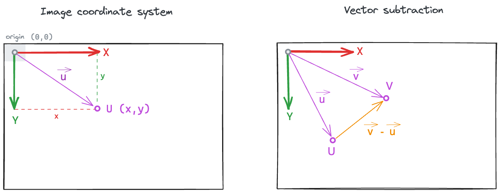
In the above computation:
- \(V\) and \(\vec{v}\) represent the resident’s centroid position,
- \(U\) and \(\vec{u}\) represent the intruder’s centroid position, and
- \(\vec{v} - \vec{u}\) is the vector pointing from the intruder to the resident.
Then, we use compute_forward_vector_angle, which does two things in one go: it derives the intruder’s forward-facing direction (its “head vector”) from the left and right ear keypoints, and then measures the angle between that head vector and a reference vector. By passing reference_vector=intruder_to_resident_vector, we get exactly the angle we are after.
from movement.kinematics import compute_forward_vector_angle
intruder_facing_resident_angle = compute_forward_vector_angle(
data=ds.position.sel(individual="intruder_w"), # all intruder keypoints,
left_keypoint="left_ear",
right_keypoint="right_ear",
camera_view="top_down",
reference_vector=intruder_to_resident_vector,
in_degrees=True
)
intruder_facing_resident_angle<xarray.DataArray 'forward_vector_angle' (time: 3394)> Size: 27kB -152.7 -152.3 -150.1 -148.4 -148.1 -149.1 ... 83.26 83.9 83.22 82.98 83.44 83.37 Coordinates: (2) Attributes: (1)
NoteUnderstanding forward vector angle
You can think about it in this way: in order to uniquely determine which way is forward for an animal, we need to know the orientation of the other two body axes: left-right and up-down. The left-right axis is specified by the left and right keypoints passed to the function, while we use the camera_view parameter to determine the upward direction in the 2D image (see below). The default view is “top_down”, but it can also be “bottom_up”.
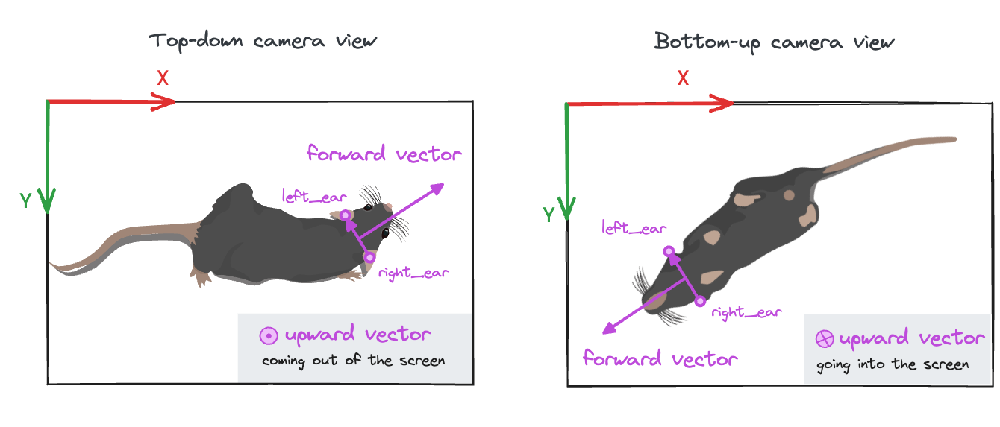
The forward vector angle is the signed angle between the animal’s forward-facing vector and a reference vector—by default the positive x-axis [1, 0]. In our case, we use the intruder-to-resident vector as a reference, which is itself a time-varying variable. The result is the angle between these two vectors, at each frame, in degrees (because we explicitly set in_degrees=True).
Read more about the forward vector and its angle in movement’s compute head direction example.
The intruder_facing_resident_angle is a signed angle:
- 0° means the resident is aligned with the intruder’s head direction,
- ±180° means the resident is diametrically opposite to the intruder’s head direction,
- the sign indicates whether the resident is on the intruder’s left or right side.
Since we are not interested in the left–right information here, we take the absolute value, giving us an angle ranging from 0° to 180°.
intruder_facing_resident_angle = abs(intruder_facing_resident_angle)We can plot the absolute value of the angle over time and highlight frames that are labelled as mount in yellow:
Code
plot_over_time(intruder_facing_resident_angle, ds.is_mount, ylabel="angle (deg)", ymax=180)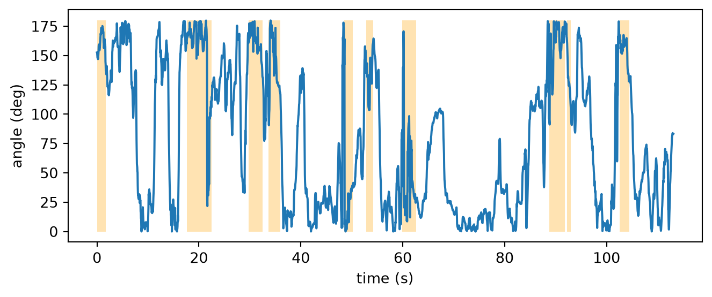
Our intuition is confirmed: in many mount bouts the angle is close to 180°, indicating the resident is behind the intruder.
Let’s compute another variable to help with our classification decisions: the resident’s centroid speed. During a mount bout, the resident should be relatively stationary, so its speed should be low.
TipExercise 8.2
Compute resident_speed, the speed of the resident’s centroid using compute_speed. Hint: We have the resident’s centroid trajectory stored as resident_c.
We can again visualise this variable in time with mount frames highlighted:
Code
plot_over_time(resident_speed, ds.is_mount, ylabel="speed (px/s)")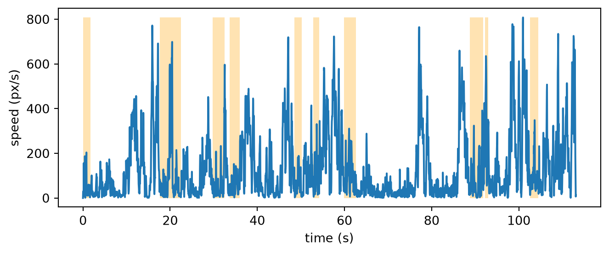
The resident does slow down during mounts, but it also slows down at many other times, so speed on its own would make a poor classifier. It may still help the decision tree, though, when combined with distance and orientation.
With these three variables in hand, we can now try to build a decision tree similar to the one shown in Figure 8.3. Use the hints in the exercise below to guide you.
TipExercise 8.3
Create a boolean mask representing a hand-crafted decision tree that predicts mount only when all three of the following conditions hold:
- the mice are close:
inter_mouse_distancebelow 100 px, - the intruder is facing away from the resident:
intruder_facing_resident_angleabove 90°, - the resident is relatively still:
resident_speedbelow 200 px/s.
Store the result in predicted_mount_tree, then evaluate it against the ground truth ds.is_mount with a confusion matrix and a classification report, like we did for the distance-only classifier.
Hint: you can combine boolean data arrays with the & (“and”) operator. Remember to wrap each comparison in parentheses.
TipDiscuss
- We picked 100 px, 90°, and 200 px/s by eye. How much do the scores change if you nudge them?
- Does the order of the three conditions change the predictions?
- What other tree shapes could you build from the same three variables? For example, if we used an “OR” branch, how would you expect recall and precision to change?
- What if we were trying to distinguish between many different behaviours?
NoteOptional: use machine learning to fit a decision tree
Everything we did above was hand-picked: we chose the questions, their thresholds, and the shape of the tree. With scikit-learn’s DecisionTreeClassifier, however, we can fit a decision tree that learns all three from the data.
How does the tree learn from the data? At each node, it tries every feature and every possible threshold, and keeps the split that creates two groups that are as pure as possible, meaning each group contains mostly one class of data. The search is greedy: it never revisits earlier splits, so the final tree is usually good, but not guaranteed to be the best one.
In the code block below, we train a DecisionTreeClassifier. We first define a feature matrix X and a labels vector y, and then fit a DecisionTreeClassifier with max_depth=3. We can then visualise the computed tree with plot_tree.
Code
from sklearn.tree import DecisionTreeClassifier, plot_tree
# Define feature matrix `X`: one row per frame, one column per feature
X = pd.DataFrame({
"inter_mouse_distance": inter_mouse_distance.values,
"intruder_facing_resident_angle": intruder_facing_resident_angle.values,
"resident_speed": resident_speed.values,
})
# Define label vector `y`. The label vector holds the ground-truth,
# i.e. the manual behaviour labels per frame.
y = ds.is_mount.values
# Initialise classifier
tree_clf = DecisionTreeClassifier(
max_depth=3,
class_weight="balanced",
# The “balanced” mode uses the values of y to automatically adjust weights inversely proportional to class frequencies in the input data
random_state=0,
# deterministic
)
# Fit classifier to data
tree_clf.fit(X, y)
# Visualise tree
plt.figure(figsize=(11, 5))
annotations = plot_tree(
tree_clf,
feature_names=X.columns,
class_names=["not mount", "mount"],
impurity=False,
filled=True,
rounded=True,
fontsize=7,
)
# Drop the "value" line from each box, to keep the plot easy to read
for ann in annotations:
lines = ann.get_text().split("\n")
ann.set_text("\n".join(ln for ln in lines if not ln.startswith("value")))
plt.tight_layout()
plt.show()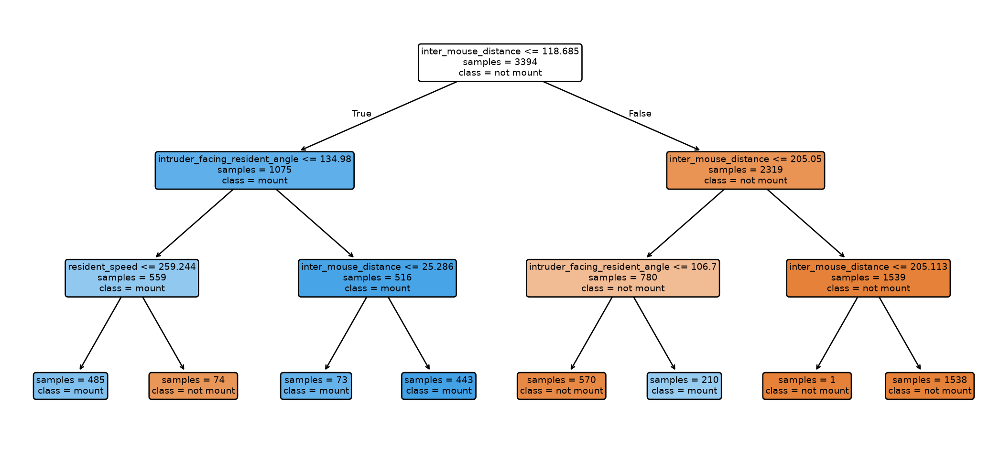
Compare this to the tree we wrote by hand. Three things stand out:
- it picks its own thresholds (~119 px, ~135°, ~259 px/s) instead of our hand-picked ones;
- it asks different questions in different branches: speed only appears on one branch, and
inter_mouse_distanceis reused at several depths with different thresholds; - it is therefore not a simple “all three must hold” rule: some frames are predicted
mountbecause the mice are very close, others because they are moderately close and the intruder is facing away.
Note that we fitted this tree on all frames purely to illustrate its structure, so its scores will be optimistic. In the next section we follow the proper workflow with a train/validation split—and an ensemble of trees instead of one.
8.5 A random forest classifier
With three variables there are already many possible thresholds and tree shapes we can select by hand. Intuitively, it’s also clear that having more variables (or “features”, in machine-learning terms) helps us distinguish between more behaviours. But with ten or fifty features, hand-tuning the sequence of decisions and thresholds would be very tedious.
In fact, letting the model learn the splits, rather than hand-picking them, is how decision trees are used in practice (see the note above for an example). However, a single learnt tree tends to overfit: if we let it grow deep enough, it ends up memorising the training data, rather than the general underlying pattern that distinguishes behaviours. It then performs well on the training set or very similar datasets, but it won’t generalise well to new datasets.
A random forest model addresses exactly this issue. It fits an ensemble of multiple decision trees (100 by default in scikit-learn) and aggregates their votes to make a final prediction. The random part refers to the fact that each tree is trained on a random subset of the data, and each split considers a random subset of features. This way, no two trees “memorise” the same quirks of the training data — those quirks cancel out in the vote, while the pattern the trees agree on survives. As a result, generalisation is improved.
Random forests are also practical: they are robust to noise in features, require little tuning, and can handle features on different scales (pixels, radians, pixels/second) without the need for normalisation. Moreover, they don’t require many computational resources, making them suitable for quick experimentation.
Let’s train a random forest on our three features. Importantly, we now train on only a fraction of the data and hold out the rest. This allows us to measure performance on unseen frames, and thus assess the model more realistically.
8.5.1 Train / validation split
scikit-learn’s RandomForestClassifier expects the data as a feature matrix X (one row per frame, one column per feature) and a label vector y (one ground-truth label per frame). We build those, then split the data temporally: train on the first 70% of frames, validate on the last 30%.
NoteA note on split naming
We call the held-out tail a validation set, not a test set. That’s because we intend to use it to tune the model: we will inspect its scores and may adjust features accordingly. Therefore, the validation set is not a fair measure of how the model will perform on new data.
The real test comes later, using a video the model has never seen before.
WarningAvoiding data leakage
Why did we perform a temporal split rather than a random split? Adjacent frames are almost identical, so random sampling would put near-duplicate frames in both sets. The model would have an easy job predicting a validation frame’s label if it had already seen its neighbours in the training set. This is an example of data leakage. A temporal split keeps train and validation sets separate, and is usually the right choice for time-series data like videos.
If we had multiple annotated videos, the cleaner approach would be to split across videos: train on some, validate on others. This better reflects the goal of generalising to new videos.
Sharp-eyed readers may notice that we explored and chose our features before making this split—looking at plots that span the whole video, validation frames included. Isn’t that leakage too? Yes, though it’s a mild case here. We picked our three features from domain knowledge, not by fitting anything to the labels, and the plots only confirmed intuition we already had. That is different from data-driven feature selection (e.g. automatically ranking hundreds of features by how well they correlate with the labels), which should only be done on the training set.
The strictly-correct pipeline is: split first, then explore and select features looking only at the training data. See also scikit-learn’s excellent guide on common pitfalls and recommended practices.
# Define feature matrix `X`: one row per frame, one column per feature
X = pd.DataFrame({
"inter_mouse_distance": inter_mouse_distance.values,
"intruder_facing_resident_angle": intruder_facing_resident_angle.values,
"resident_speed": resident_speed.values,
})
# Define label vector `y`. The label vector holds the ground-truth,
# i.e. the manual behaviour labels per frame.
y = ds.is_mount.values
# Set number of samples in training split
split = int(0.7 * len(X))
# Extract training set
X_train, X_val = X.iloc[:split], X.iloc[split:]
# Extract validation set
y_train, y_val = y[:split], y[split:]
print(f"Train: {len(X_train)} frames ({y_train.sum()} mount)")
print(f"Validation: {len(X_val)} frames ({y_val.sum()} mount)")Train: 2375 frames (527 mount)
Validation: 1019 frames (171 mount)Both splits contain frames classified as mount, so the model has positive examples to learn from and we have some to evaluate on. This is important to verify, because a purely temporal split does not guarantee that a rare behaviour will appear in both splits.
8.5.2 Train and evaluate the model
We are now ready to train a RandomForestClassifier. We set class_weight="balanced" so the rare mount class is not swamped by the majority, and fix random_state for reproducibility (this ensures repeated runs yield identical results).
from sklearn.ensemble import RandomForestClassifier
clf = RandomForestClassifier(class_weight="balanced", random_state=0)
clf.fit(X_train, y_train)RandomForestClassifier(class_weight='balanced', random_state=0)In a Jupyter environment, please rerun this cell to show the HTML representation or trust the notebook.
On GitHub, the HTML representation is unable to render, please try loading this page with nbviewer.org.
Parameters
Fitted attributes
That’s it, clf is now a trained classifier. Training on a few thousand frames with three features completes almost immediately.
Now we can ask the trained model to classify the held-out validation frames:
y_pred = clf.predict(X_val)By comparing against the ground truth labels y_val, we can assess the model’s performance on the validation split using the same metrics as before (confusion matrix, precision, recall, and F1 score).
disp = ConfusionMatrixDisplay.from_predictions(
y_val, y_pred,
labels=[True, False],
display_labels=["mount", "not mount"],
normalize="true",
values_format=".0%",
cmap="magma",
)
disp.ax_.set_xlabel("Predicted class")
disp.ax_.set_ylabel("Ground-truth class")
plt.show()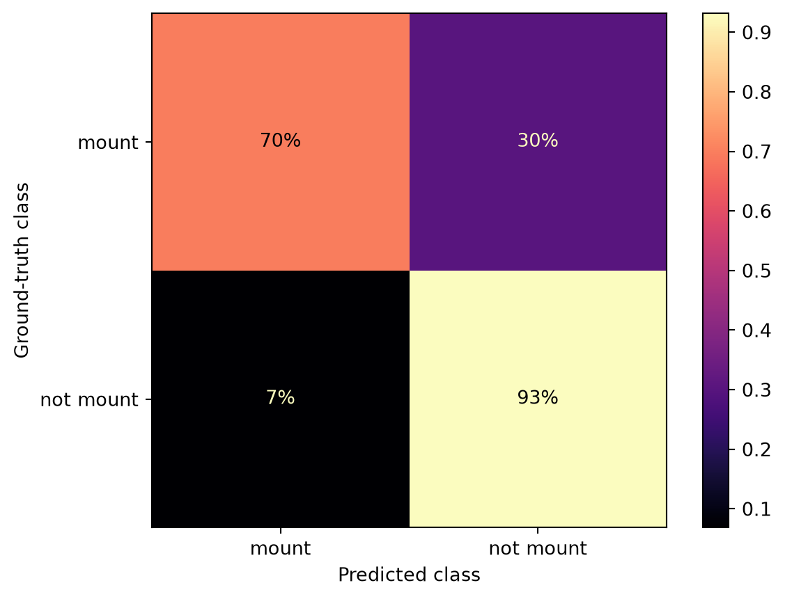
print(classification_report(
y_val,
y_pred,
labels=[True, False],
target_names=["mount", "not mount"],
)) precision recall f1-score support
mount 0.67 0.70 0.68 171
not mount 0.94 0.93 0.93 848
accuracy 0.89 1019
macro avg 0.81 0.81 0.81 1019
weighted avg 0.89 0.89 0.89 1019
The scores are modest—a recall of around 0.70 means we still miss about 30% of frames classified as mount, and precision around 0.67 means roughly a third of the predicted mount frames are false positives. That’s about what we should expect from three hand-picked features and a single training video.
Finally, we can ask the model which features it leaned on the most.
importances = pd.Series(
clf.feature_importances_,
index=X.columns,
).sort_values()
importances.plot.barh()
plt.xlabel("importance")
plt.tight_layout()
plt.show()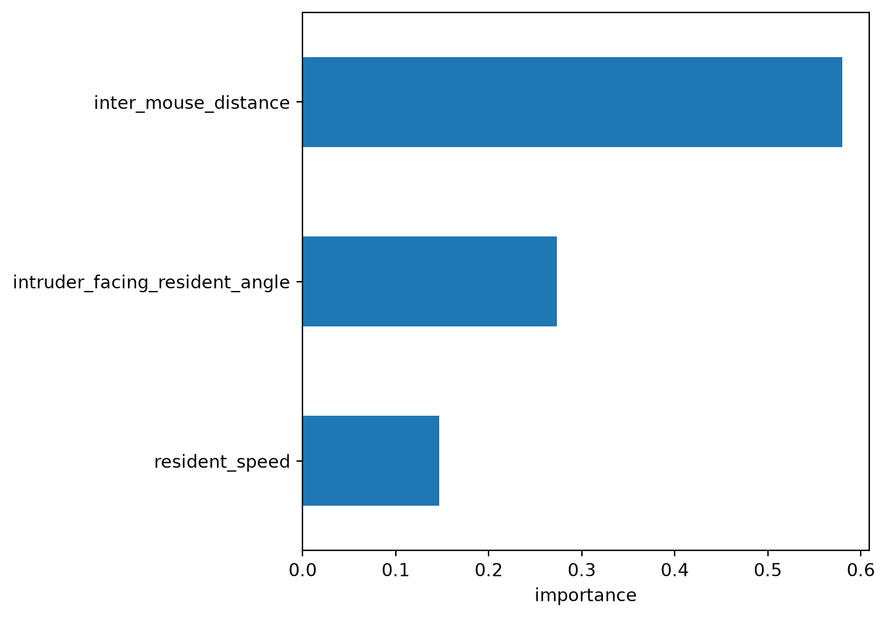
As the exploratory plots suggest, inter-mouse distance dominates, with the intruder-facing-resident angle a clear second, and resident speed ranking last.
NoteTake feature importances with a pinch of salt
Ranking features like this is a real strength of tree-based models. Because each split is an explicit yes/no question about a single feature, we can trace which features drove a decision—making them far more interpretable than, say, a neural network, whose logic is spread across thousands of weights.
That said, the importances should be read with some care. The importances reported by a random forest are impurity-based, and this measure is known to inflate the apparent importance of continuous features (like our distances and angles) relative to coarse ones (e.g. sex). More reliable alternatives, such as permutation importance, measure how much performance drops when a feature is deliberately shuffled. Another popular tool is SHAP (SHapley Additive exPlanations), which fairly attributes each individual prediction to its features.
8.5.3 Test on a new video
The validation score told us how well the model does on the tail of the same video it was trained on. How well does it perform on a completely new video, with different animals, that it has never seen? This is a stricter test: the validation frames still came from the same recording session, so they were not truly independent. Evaluating on a new video is closer to how we would use the classifier in practice.
We have data from a different video—mouse026_task1_annotator1—including its SLEAP pose tracks and BORIS mount annotations (see Section A.4). These files live in the same folder as the data for mouse044.
To apply the model we need to put the new data through exactly the same pipeline: load and smooth the tracks, expand the BORIS bouts into per-frame labels, and compute the same three features. Rather than repeating all those steps by hand, let’s wrap them into a single function—compute_features (expand the code block to reveal it).
Code
def compute_features(slp_name, tsv_name):
"""Run the full pipeline for one video and return the movement dataset, X and y."""
# Load pose tracks and smooth them
ds = load_dataset(data_dir / slp_name, source_software="SLEAP", fps=30)
ds.update({"position": rolling_filter(ds.position, window=7, min_periods=2)})
# Expand BORIS bouts into per-frame labels
boris_df = pd.read_csv(data_dir / tsv_name, sep="\t")
ds["is_mount"] = xr.zeros_like(ds.time, dtype=bool)
for _, ev in boris_df.iterrows():
ds["is_mount"][ev["Image index start"]:ev["Image index stop"]] = True
# Compute the three features
centroid_pos = ds.position.mean("keypoint")
inter_mouse_distance = compute_pairwise_distances(
centroid_pos, dim="individual", pairs={"resident_b": "intruder_w"}
)
resident_c = centroid_pos.sel(individual="resident_b")
intruder_c = centroid_pos.sel(individual="intruder_w")
angle = abs(compute_forward_vector_angle(
data=ds.position.sel(individual="intruder_w"),
left_keypoint="left_ear",
right_keypoint="right_ear",
camera_view="top_down",
reference_vector=resident_c - intruder_c,
in_degrees=True,
))
resident_speed = compute_speed(resident_c)
X = pd.DataFrame({
"inter_mouse_distance": inter_mouse_distance.values,
"intruder_facing_resident_angle": angle.values,
"resident_speed": resident_speed.values,
})
y = ds.is_mount.values
return ds, X, yWith this helper function, we can compute the relevant features from the new data:
ds_new, X_new, y_new = compute_features(
slp_name="mouse026_task1_annotator1.slp",
tsv_name="mouse026_task1_mount_events_boris.tsv",
)
print(f"Ground-truth labels in new video: {len(y_new)} frames ({y_new.mean():.1%} mount)")Ground-truth labels in new video: 3632 frames (29.8% mount)We can now pass these features to our already trained classifier and get its predictions. Applying a trained model to new data like this is often called running inference.
y_new_pred = clf.predict(X_new)Let’s inspect the classification report:
print(classification_report(
y_new,
y_new_pred,
labels=[True, False], # mount first
target_names=["mount", "not mount"],
)) precision recall f1-score support
mount 0.77 0.89 0.83 1081
not mount 0.95 0.89 0.92 2551
accuracy 0.89 3632
macro avg 0.86 0.89 0.87 3632
weighted avg 0.90 0.89 0.89 3632
Encouragingly, the model held up well—in fact the mount scores are higher here than on our validation set. That’s a nice result, but let’s not over-read it: this new data may happen to be favourable (its mounts could be frequent and clearly separated), and a single dataset is not proof of a robust classifier.
Differences in lighting, animal appearance, and behaviour can make the pose tracks we run inference on significantly different from those used in training (domain shift), and performance can drop as a result. In a real scenario, we would evaluate the classifier on data from several videos that span the full diversity of the data we plan to run it on. This way, we get a more reliable estimate of the model’s performance.
8.6 From frame predictions to behaviour bouts
Our model classifies each frame independently, so its predictions flicker: a few stray non-mount frames may split a single mount bout into fragments, and vice-versa. We can observe this by counting contiguous runs of predicted mount frames and comparing them with the ground-truth bouts.
Code
import numpy as np
def count_bouts(mask):
"""Count contiguous runs of True in a boolean array."""
mask = np.asarray(mask).astype(int)
return int((np.diff(mask, prepend=0) == 1).sum())
print(f"Predicted mount bouts: {count_bouts(y_new_pred)}")
print(f"Ground-truth mount bouts: {count_bouts(y_new)}")Predicted mount bouts: 87
Ground-truth mount bouts: 11The model produces substantially more bouts than are actually present. Since the mount behaviour unfolds over a much longer timescale than a single frame (just as we annotated it using BORIS in Chapter 7), we can try to smooth the predictions in time.
The idea is to assign each frame’s label by taking a majority vote over a small moving window, so isolated flips get “overruled” by their neighbours. We can do this with the same rolling_filter we used for the pose tracks, using the median as the statistic: over a window of 0s and 1s, the median sets a frame as mount only if most frames in the window are also classified as mount—a direct majority vote.
Note that with an even-sized window, the vote can tie. In that case the median is 0.5. We can resolve ties by rounding the output with .round, which follows NumPy’s convention of rounding halves to the nearest even number (so 0.5 becomes 0, i.e.non-mount).
The filter operates on time-aware movement arrays, so we first wrap y_new_pred as a DataArray along the same time axis.
# Wrap the predictions as a DataArray on the time axis so movement can filter them
y_new_pred = xr.DataArray(
y_new_pred, coords={"time": ds_new.time}, dims="time"
)
TipExercise 8.4
Smooth the per-frame predictions using rolling_filter, store the result in y_new_smoothed, and count its bouts using the count_bouts function.
Use a window of 30 frames (~1 s at 30 fps) and:
- Set
statistic="median", to get the majority vote described above. - Set
min_periods=1, so the edges of the array are kept instead of being padded withNaNs. - Convert the result back to a boolean mask. Hint: the filter treats the input boolean data as 0s and 1s and always returns floats (decimal numbers). Also, before casting to booleans with
.astype(bool), you will need to round the output to resolve ties (0.5).
How does the resulting number of bouts compare to the ground truth?
After smoothing, the bout count aligns much more closely with the ground truth, and most of the frame-level flicker has disappeared. The effect is easiest to see in a plot, so let’s visualise the ground-truth, raw predicted, and smoothed mount bouts over time.
Code
fig, ax = plt.subplots(figsize=(7, 2))
rows = [
("ground truth", y_new, "tab:green"),
("raw predicted", y_new_pred, "tab:gray"),
("smooth predicted", y_new_smoothed, "tab:orange"),
]
for i, (label, mask, color) in enumerate(rows):
ax.fill_between(ds_new.time, i, i + 0.8, where=mask, color=color, step="mid")
ax.set_yticks([i + 0.4 for i in range(len(rows))])
ax.set_yticklabels([label for label, _, _ in rows])
ax.invert_yaxis() # first row on top
ax.set_xlabel("time (s)")
plt.tight_layout()
plt.show()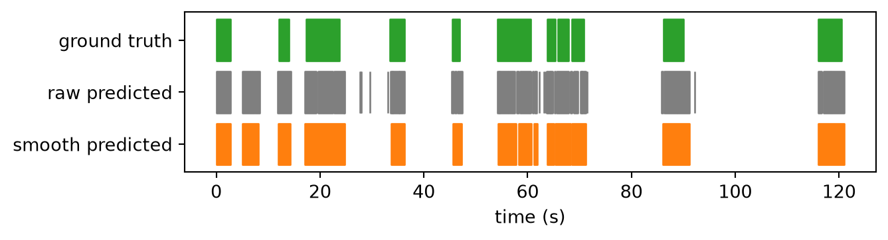
NoteChoosing the window length is a trade-off
A wider window removes more flicker but also erases actual short bouts, while a narrow one leaves more noise. The right choice depends on the timescale of your behaviour; here a one-second window is a reasonable choice, since real mounts typically last longer than that.
We can also turn the smoothed boolean array into a table of bouts, with a start and stop time for each contiguous run of mount frames. This is similar to the original BORIS annotations, but now produced automatically by our classifier.
We can implement this as a function, extract_bouts, that takes a boolean mask and returns a table of bouts. Each bout begins where the mask flips from False to True and ends at the first False frame after the run. We deliberately treat stop_frame as exclusive, following the same half-open [start, stop) convention we used to read the BORIS labels into is_mount earlier.
def extract_bouts(mask):
"""Turn a boolean DataArray mask over time into a table of [start, stop) bouts."""
values = mask.values.astype(int)
starts = np.where(np.diff(values, prepend=0) == 1)[0] # first True frame of each run
stops = np.where(np.diff(values, append=0) == -1)[0] + 1 # first False frame after the run
times = mask.time.values # seconds, from the DataArray's time coordinate
dt = times[1] - times[0] # duration of a single frame in seconds
start_time_s = times[starts]
duration_s = (stops - starts) * dt
stop_time_s = start_time_s + duration_s
return pd.DataFrame({
"behaviour": "mount",
"start_frame": starts,
"stop_frame": stops, # exclusive: mask[start_frame:stop_frame] is the bout
"start_time_s": start_time_s.round(2),
"stop_time_s": stop_time_s.round(2),
"duration_s": duration_s.round(2),
})
bouts_df_predicted = extract_bouts(y_new_smoothed)
bouts_df_predicted| behaviour | start_frame | stop_frame | start_time_s | stop_time_s | duration_s | |
|---|---|---|---|---|---|---|
| 0 | mount | 0 | 84 | 0.00 | 2.80 | 2.80 |
| 1 | mount | 153 | 246 | 5.10 | 8.20 | 3.10 |
| 2 | mount | 359 | 427 | 11.97 | 14.23 | 2.27 |
| 3 | mount | 513 | 742 | 17.10 | 24.73 | 7.63 |
| 4 | mount | 1011 | 1091 | 33.70 | 36.37 | 2.67 |
| 5 | mount | 1367 | 1421 | 45.57 | 47.37 | 1.80 |
| 6 | mount | 1629 | 1728 | 54.30 | 57.60 | 3.30 |
| 7 | mount | 1729 | 1734 | 57.63 | 57.80 | 0.17 |
| 8 | mount | 1748 | 1821 | 58.27 | 60.70 | 2.43 |
| 9 | mount | 1836 | 1856 | 61.20 | 61.87 | 0.67 |
| 10 | mount | 1913 | 1952 | 63.77 | 65.07 | 1.30 |
| 11 | mount | 1961 | 2050 | 65.37 | 68.33 | 2.97 |
| 12 | mount | 2054 | 2136 | 68.47 | 71.20 | 2.73 |
| 13 | mount | 2583 | 2738 | 86.10 | 91.27 | 5.17 |
| 14 | mount | 3480 | 3632 | 116.00 | 121.07 | 5.07 |
NoteWhy are some bouts shorter than the smoothing window?
You might expect a one-second median filter to guarantee bouts at least a second long; yet the table still shows a few very short ones. A rolling median filter only suppresses flips when the window has a clear majority. In ambiguous regions where the raw predictions oscillate between mount and non-mount—typically at the boundary between two real bouts—the majority vote can still produce isolated one- or two-frame segments.
If you prefer to impose a minimum bout length, drop short bouts explicitly:
bouts_df_predicted = bouts_df_predicted[
bouts_df_predicted["duration_s"] >= 1.0
].reset_index(drop=True)Finally we can save the dataframe to a CSV file for later analysis, or to share with collaborators.
save_path = data_dir / "mouse026_task1_mount_bouts_predicted.csv"
bouts_df_predicted.to_csv(save_path, index=False)8.7 Where to go next
- Add more data: include many videos, multiple animals, and ideally more than one annotator, so you can also measure how consistent the labels themselves are.
- Define splits that generalise: with more videos, you can hold out entire videos rather than frames, and rotate which ones are held out (cross-validation) to see how much performance varies.
- Consider richer features: consider tens or hundreds of features and let the model learn which ones matter. For representative sets, see Table 3 in Segalin et al. (2021) and Table S4 in Choudhary et al. (2025).
- Add temporal features: consider including features that summarise other feature values over a window centred on each frame (mean, standard deviation, min, max).
- Consider off-the-shelf tools: consider using existing tools built for supervised classification. The following tools also accept kinematic features computed from pose tracks. However, some may be species-specific, or require a specific set of keypoints/skeleton:
- Explore temporal models: sequence models such as RNNs and Transformers can learn the temporal structure of a behaviour directly, instead of classifying frames independently. For example, see Figure 5 in Sun et al. (2021).
- Compute features directly from pixels: tools like FERAL (Skovorodnikov et al. 2026) and DeepEthogram (Bohnslav et al. 2021) compute features directly from the video data without the intermediate pose estimation step.
8.8 Solutions
Click each solution to reveal it.
TipExercise 8.1
from movement.kinematics import compute_pairwise_distances
# Compute the centroid of each mouse: one point per mouse and time frame
centroid_pos = ds.position.mean("keypoint")
# Compute the distance between the two centroids
inter_mouse_distance = compute_pairwise_distances(
centroid_pos,
dim="individual",
pairs={"resident_b": "intruder_w"},
)
inter_mouse_distance<xarray.DataArray 'distance' (time: 3394)> Size: 27kB 63.44 62.85 62.37 62.23 61.93 61.3 59.01 ... 649.8 656.5 659.4 662.5 662.6 663.1 Coordinates: (1) Attributes: (1)
The result is a data array with a single value per time frame: the distance in pixels between the resident’s and the intruder’s centroids.
TipExercise 8.2
from movement.kinematics import compute_speed
resident_speed = compute_speed(resident_c)
resident_speed<xarray.DataArray 'speed' (time: 3394)> Size: 14kB 0.0 25.86 30.31 6.706 15.06 100.5 156.5 ... 359.6 189.1 126.6 59.85 6.58 13.16 Coordinates: (2)
The result is a data array with one value per time frame: the speed of the resident’s centroid in pixels per second.
TipExercise 8.3
predicted_mount_tree = (
(inter_mouse_distance < 100) # are the mice close?
& (intruder_facing_resident_angle > 90) # is the intruder facing away?
& (resident_speed < 200) # is the resident relatively still?
)disp = ConfusionMatrixDisplay.from_predictions(
ds.is_mount.values,
predicted_mount_tree.values,
labels=[True, False], # mount first
display_labels=["mount", "not mount"],
normalize="true",
values_format=".0%",
cmap="magma",
)
disp.ax_.set_xlabel("Predicted class")
disp.ax_.set_ylabel("Ground-truth class")
plt.show()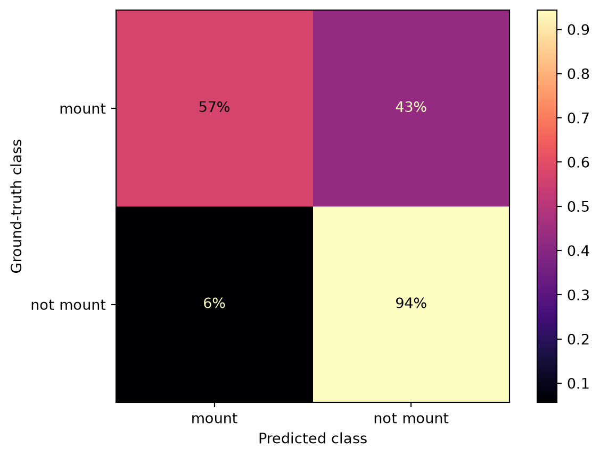
print(classification_report(
ds.is_mount.values,
predicted_mount_tree.values,
labels=[True, False], # mount first
target_names=["mount", "not mount"],
)) precision recall f1-score support
mount 0.72 0.57 0.64 698
not mount 0.89 0.94 0.92 2696
accuracy 0.87 3394
macro avg 0.81 0.76 0.78 3394
weighted avg 0.86 0.87 0.86 3394
Compared to the distance-only classifier, precision on the mount class went up (from ~0.58 to ~0.72) while recall went down (from ~0.76 to ~0.57). That makes sense: each extra question makes it harder for a frame to be classified as mount (more conditions need to be met). We reduce the number of false positives, but we also miss more real mounts. The F1 score barely changed.
TipExercise 8.4
window = 30 # frames (~1 s at 30 fps)
y_new_smoothed = (
rolling_filter(
y_new_pred,
window=window,
statistic="median", # majority vote over the window
min_periods=1, # keep the edges instead of padding them with NaNs
)
.round() # resolve ties (0.5) and land exactly on 0.0 / 1.0
.astype(bool) # back to a boolean mask
)
print(f"Smoothed mount bouts: {count_bouts(y_new_smoothed)}")Smoothed mount bouts: 15